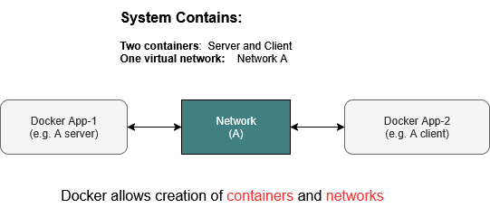

A network example
As explained earlier, Docker is a container that bundles application code along with the tools required to run it. In today’s era of distributed computing, it's common for applications to communicate over networks using protocols like TCP or UDP.
In addition to containerization, Docker also provides built-in tools to create virtual networks, enabling containers to communicate with each other seamlessly.
1. What is a docker network
A Docker network is a virtual communication layer that enables containers to interact with each other, whether they are running on the same machine or distributed across multiple hosts.
- It creates an isolated, software-defined environment for container networking.
- The example below shows two Docker containers communicating through such a virtual network.
- Both the containers and the virtual network are created and managed using Docker's built-in tools.

2. Protocols supported
All Docker networks support:
It’s you application inside the container (e.g. a Python script or C program) that chooses whether to use TCP or UDP
3. An example application
In this section, we demonstrate the concept of a Docker network by creating two Docker containers and one virtual network.
-
One container acts as a TCP server, waiting for incoming connections.
-
The second container serves as a TCP client that connects to the server. Once connected, the server sends the message "hello client 1, 2, 3" every second.
-
The virtual network is a Docker-managed component that establishes the TCP link between the server and the client, enabling seamless communication.
How many containers and networks
In this example, we will set up two containers—one for the client and one for the server—and connect them using a single network, as illustrated below
3. Directory structure
Create the following directory structure. Refer to the previous tutorial Hello Docker if you need a refresher.
# we do not need any extra modules other than the standard ones
# so we are removing requirments.txt file completely
tcp-docker-app/
├── server/
│ ├── server.py
│ └── Dockerfile
└── client/
├── client.py
└── Dockerfile
4. File contents
Server (Python)
server/server.py
import socket
import time
HOST = '0.0.0.0' # Listen on all interfaces
PORT = 5000 # Port to listen on
def start_server():
with socket.socket(socket.AF_INET, socket.SOCK_STREAM) as server_socket:
server_socket.bind((HOST, PORT))
server_socket.listen(1)
print(f"[SERVER] Listening on {HOST}:{PORT}...")
conn, addr = server_socket.accept()
with conn:
print(f"[SERVER] Connected by {addr}")
counter = 1
while True:
message = f"hello from server - msg {counter}\n"
conn.sendall(message.encode())
print(f"[SERVER] Sent: {message.strip()}")
counter += 1
time.sleep(1)
if __name__ == "__main__":
start_server()
Server (Dockerfile)
server/Dockerfile
Client (Python)
client/client.py
import socket
SERVER_HOST = 'server-container' # Replace with actual hostname or IP if needed
SERVER_PORT = 5000
def start_client():
with socket.socket(socket.AF_INET, socket.SOCK_STREAM) as s:
print(f"[CLIENT] Connecting to {SERVER_HOST}:{SERVER_PORT}...")
s.connect((SERVER_HOST, SERVER_PORT))
print("[CLIENT] Connected. Waiting for messages...\n")
while True:
data = s.recv(1024)
if not data:
print("[CLIENT] Connection closed by server.")
break
print(f"[CLIENT] Received: {data.decode().strip()}")
if __name__ == "__main__":
start_client()
Client (Docker file)
client/Dockerfile
# Use a lightweight Python base image
FROM python:3.11-slim
# Set the working directory inside the container
WORKDIR /app
# Copy the client script into the container
COPY client.py .
# Set the default command to run the client
CMD ["python", "client.py"]
5. Build client and server images
Build server image
- Open a terminal and navigate to the server folder.
- Build the Docker image:
Build client images
- Navigate to the client folder
- Build the client image:
Check the docker images
You should see something like this
REPOSITORY TAG IMAGE ID CREATED SIZE
my-tcp-server latest abcdef123456 10 minutes ago 45MB
my-tcp-client latest 123456abcdef 9 minutes ago 44MB
6. Create a docker network
Create a network named network-A to manage communication between the server and client Docker containers:
To verify that docker network is created:
Output shold look like7. Run and test client/server dockers
In terminal 1 (run the server):
In terminal 2 (run the client):